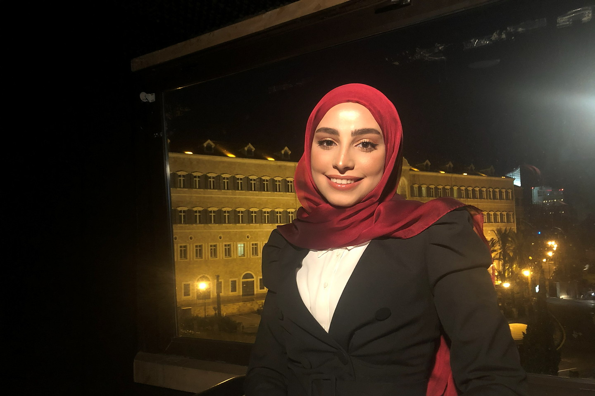

2014
It Started With Running
I started training in track & field, beginning with the 800m and 1500m before finding my way to the 400m. I always had a soft spot for the 400m hurdles and eventually competed in it, earning 2nd place nationally.

A little about me
Two halves of the same person: the one who runs, cooks and travels — and the one with the licence, the Master's and eight years of fieldwork.
I've been running for over 10 years and I guess you could say I'm pretty good at running through life too. I'm married, live in Lebanon, love to travel, and between work, family, running, and everything in between, I'm always on the run.
I'm happiest when I'm moving, cooking something colorful, travelling somewhere new, or helping women feel stronger, healthier, and happier in their own skin.
I'm endlessly curious about health, which has taken me beyond nutrition into Chinese medicine and holistic approaches. And in another life, I'd probably be a fashion designer — I've always loved the way clothes can be a form of self-expression.
I'm a licensed dietitian, certified sports nutritionist, public health professional, and former track & field athlete.
My journey started on the track. After more than 10 years competing in the 400m and 400m hurdles, I learned firsthand that nutrition, recovery, mindset, and consistency matter just as much as training.
I studied Nutrition & Dietetics at LAU and completed a Master's in Public Health at AUB. I've spent 8+ years across public health, nutrition, research and humanitarian programmes with UNICEF, WFP, AUB and the Ministry of Public Health — and explored Traditional Chinese Medicine through studies in Shanghai.
Because being your best isn't about doing everything perfectly. It's about feeling good enough to go after the life you want.
One lap, taken slowly. Every turn added something the last one couldn't.
2014
I started training in track & field, beginning with the 800m and 1500m before finding my way to the 400m. I always had a soft spot for the 400m hurdles and eventually competed in it, earning 2nd place nationally.
2016
I completed my academic coursework in Nutrition & Dietetics at LAU and joined the American Coordinated Program, completing my 9-month dietetic internship at LAU Medical Center–Rizk Hospital.
2017
I graduated and became a licensed dietitian, then began my Master's in Public Health at AUB, specializing in Epidemiology and Biostatistics.
2018
I joined UNICEF as one of Lebanon's first Youth UN Volunteers, as part of a global pilot program focused on child survival. I was one of just six young people selected in Lebanon — all while completing my Master's degree.
2019
I graduated from AUB with my Master's in Public Health and joined the World Food Programme (WFP) Lebanon as a Monitoring & Evaluation Associate. Over the next 2.5 years, I took on different roles and grew deeper into the world of public health.
2022
I began consulting with UNICEF as an Information Management Consultant, working at the intersection of health, data, and public health.
2023
I began consulting with the Ministry of Public Health through AUB, continuing to work in public health while bringing together my background in nutrition, health, and data.
2024
After stepping away from professional training during COVID, I returned to track & field and committed to a full year of focused training for the 400m. I also went deeper into sports nutrition, becoming a certified sports nutritionist.
And somewhere along the way, I decided it was time to bring all these pieces together. I started SheOnTheRun, and dedicated more time to my nutrition practice, DietOnTheRun.
2025
I travelled to China for a month to study Traditional Chinese Medicine, following my curiosity about different approaches to health and wellbeing. Back home, SheOnTheRun kept growing, and DietOnTheRun grew through my work with women one-on-one.
2026
Today, I'm bringing together everything I've learned: the athlete, the dietitian, the sports nutritionist, the public health professional, and the curious human who never stops learning.
And this is only the beginning.
Evidence and tradition were never enemies. One month at the Shanghai University of Traditional Chinese Medicine, following curiosity.